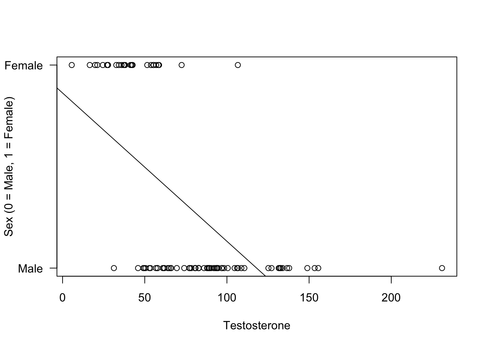
(Intercept) test_mean
0.862301781 -0.007303453 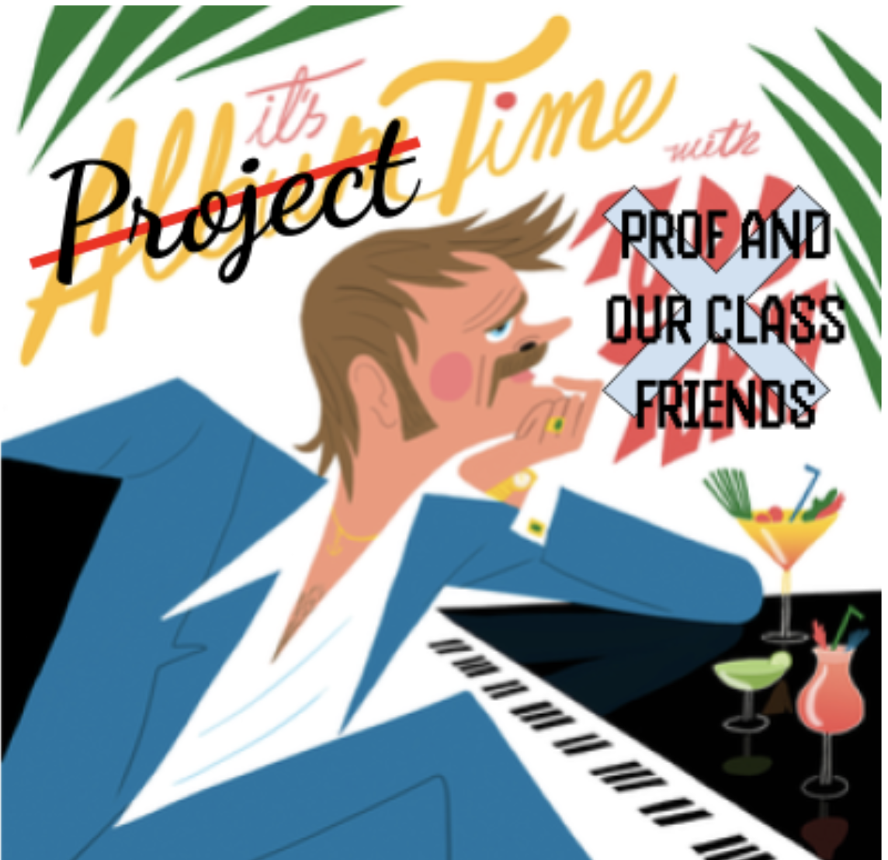
outcome (DV). what the researchers want to predict or explain
manipulation (IV). change only one thing about the variable.
In the Vision Board : think about a question that you have (real-life or research)
What is this question as a linear model?
How would you measure the DV?
What is the IV (the ONE thing that differs between the two groups)?
How might you manipulate this variable? (What is the experimental and control group?)
What are all the things that you would need or want to try and keep the same (avoid placebo)?
RECAP : the manipulation (A/B Testing) : researchers create multiple groups (conditions) and change ONE THING (the IV) about a person’s experience in each group & observe the result (the DV).
KEY IDEA : the comparison group matters!
a 2 hour stats class DECREASES boredom compared to…
a 2 hour stats class INCREASES boredom compared to…
Read the prompt below. Answer the following questions.

Will individuals in the study change their behavior if they expect something to have an effect?
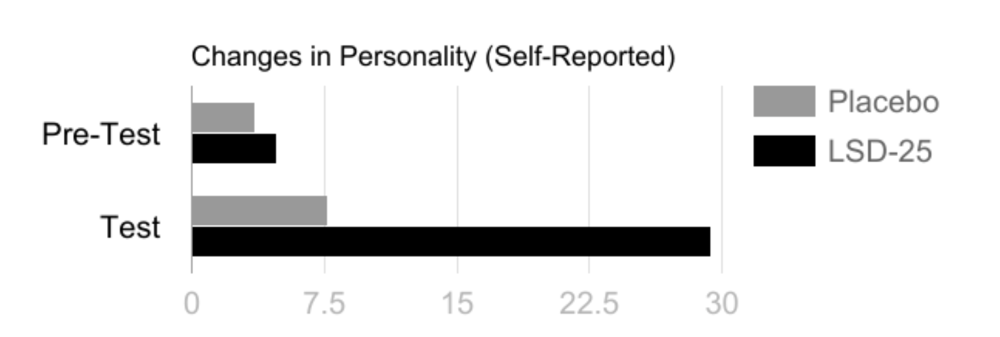
How much does the experimental manipulation represent what someone might experience in real life?
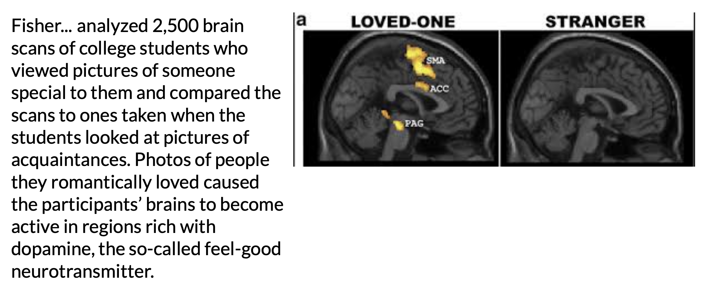
How much does the manipulation actually change the variable of interest?

If experimenters know what will happen to participants, will they change their behavior in ways that affect the results?
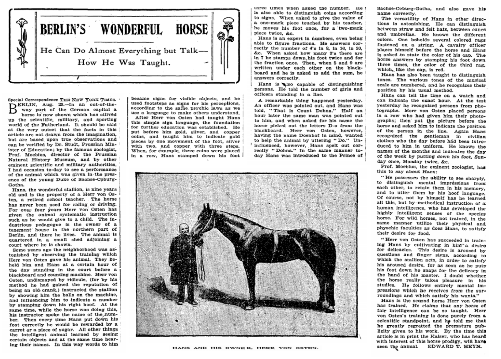
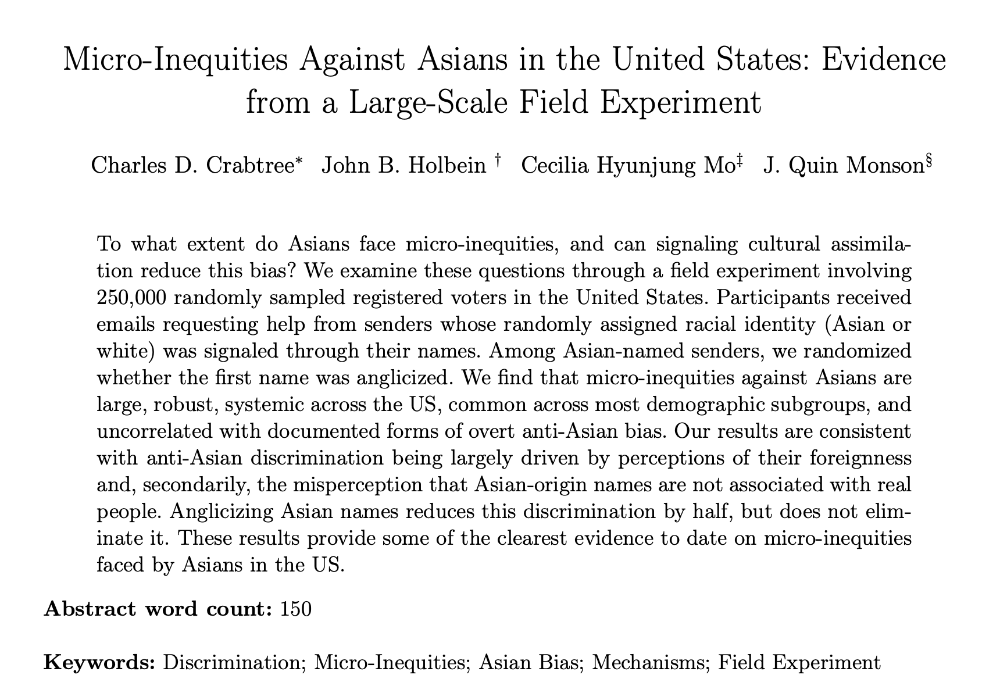
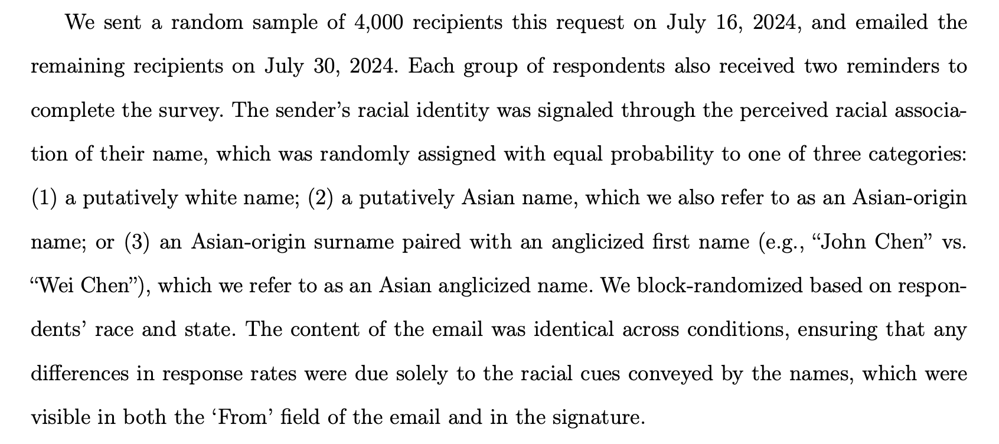

(Intercept) test_mean
0.862301781 -0.007303453 glmod <- glm(sex ~ test_mean, data = h, family = "binomial")
plot(sex ~ test_mean, data = h,
xlab = "Testosterone",
ylab = "Probability of Being Female")
curve(predict(glmod, data.frame(test_mean=x), type = "resp"), add = T, col = "red", lwd = 2)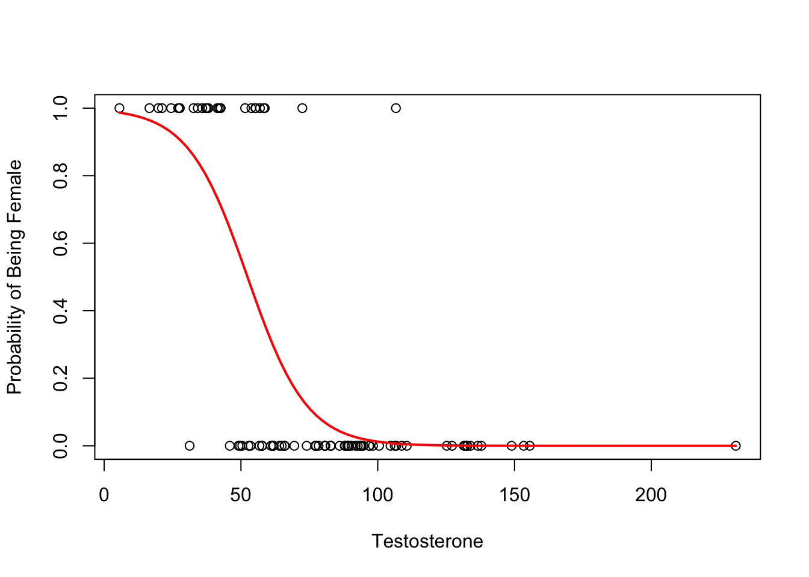
summary(glmod)
Call:
glm(formula = sex ~ test_mean, family = "binomial", data = h)
Coefficients:
Estimate Std. Error z value Pr(>|z|)
(Intercept) 4.81974 1.19821 4.022 5.76e-05 ***
test_mean -0.09200 0.02081 -4.420 9.86e-06 ***
---
Signif. codes: 0 '***' 0.001 '**' 0.01 '*' 0.05 '.' 0.1 ' ' 1
(Dispersion parameter for binomial family taken to be 1)
Null deviance: 109.96 on 89 degrees of freedom
Residual deviance: 56.09 on 88 degrees of freedom
(32 observations deleted due to missingness)
AIC: 60.09
Number of Fisher Scoring iterations: 7 test_mean
LM (Probability) -0.73
GLM/4 (Gelman & Hill Rule) -0.02
Exponentiated GLM (Odds-Ratio) 0.91coef(mod)*100 : Multiplying the coefficient by 100 gives you the percentage-point change in the probability that Y = 1 for a one-unit increase in the independent variable. (But violates assumption of heteroscedasticity….so need to check.)coef(glmod)/4 : very confusing on its own. Gelman & Hill tell you that dividing this number by 4 gives you the upper bound of the predictive difference in Y that corresponds to a 1-unit increase in X.exp(coef(glmod)) : how the odds change between two different outcomes.
Deviance : distance between an individual point and our line (non-linear)
Null Deviance : the distance with just the intercept to make predictions
Residual Deviance : the distances after our model makes predictions
Pseudo \(R^2\) = (null deviance - residual deviance) / null deviance
AIC = Akaike Information Criterion = a measure of goodness of fit…lower is “better”.
x <- read.csv("https://www.dropbox.com/scl/fi/kxh61tvf01ur4shqb230h/trust_in_science.csv?rlkey=9ythtv5mz6medhkme3m88j6sk&dl=1",
stringsAsFactors = T)
x$numRes <- as.numeric(x$residence)-1
cl_glmod <- glm(numRes ~ sci_info, data = x, family = "binomial")
plot(numRes ~ sci_info, data = x,
xlab = "Scientific Knowledge Seeking",
ylab = "Probability of Being in an Urban Environment")
curve(predict(cl_glmod, data.frame(sci_info=x), type = "resp"), add = T, col = "red", lwd = 2)summary(cl_glmod)
Call:
glm(formula = numRes ~ sci_info, family = "binomial", data = x)
Coefficients:
Estimate Std. Error z value Pr(>|z|)
(Intercept) 0.368732 0.023784 15.50 <2e-16 ***
sci_info 0.190317 0.006717 28.33 <2e-16 ***
---
Signif. codes: 0 '***' 0.001 '**' 0.01 '*' 0.05 '.' 0.1 ' ' 1
(Dispersion parameter for binomial family taken to be 1)
Null deviance: 80636 on 69513 degrees of freedom
Residual deviance: 79814 on 69512 degrees of freedom
(20 observations deleted due to missingness)
AIC: 79818
Number of Fisher Scoring iterations: 4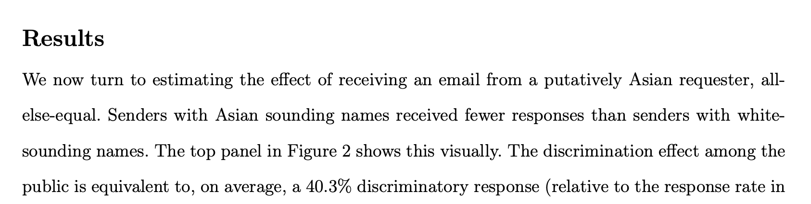
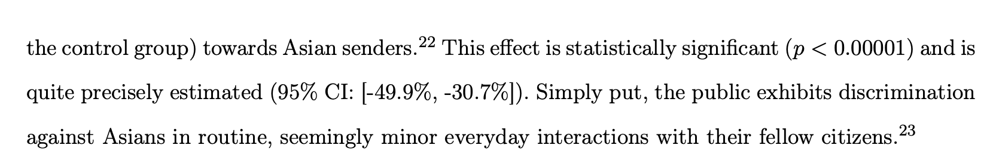
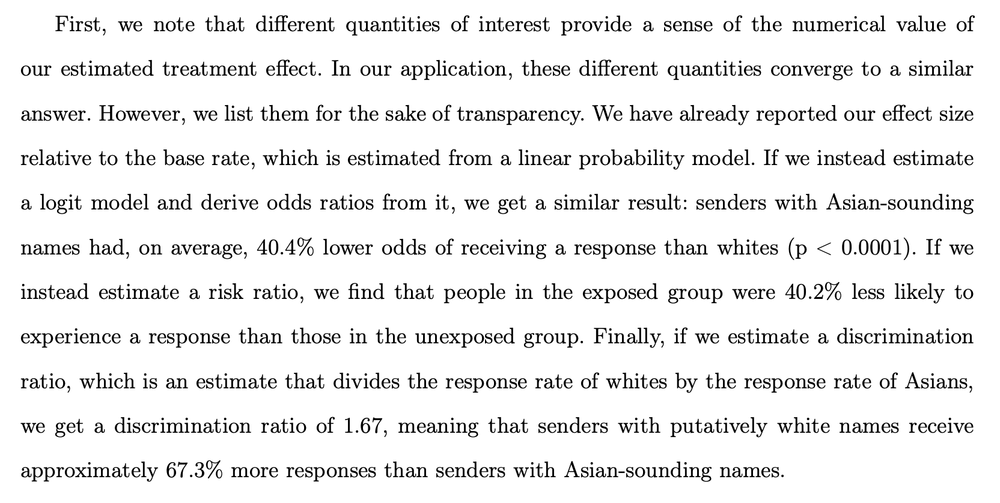
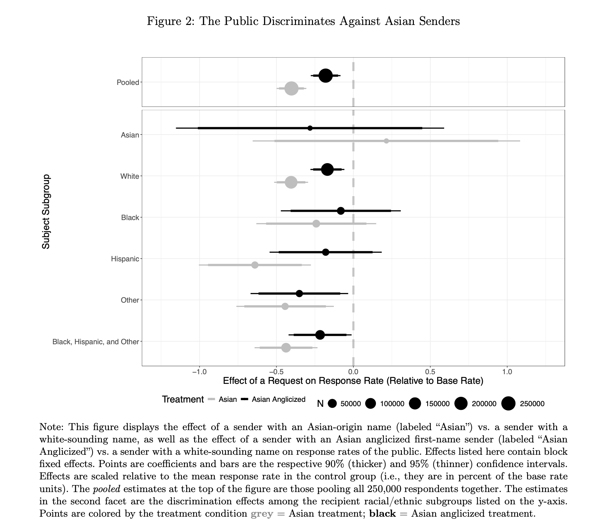
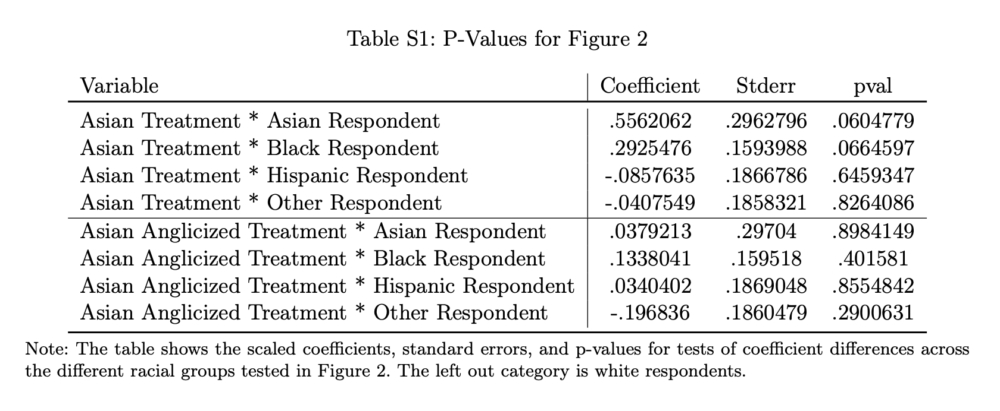